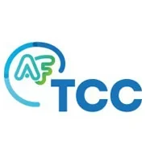

Rodolphe Oppenheimer, psychothérapeute, reçoit les adolescents et les adultes en visioconsultation. Le travail s’ajuste à votre situation, et les objectifs se construisent avec vous.
Vous n’avez pas besoin de savoir le nommer pour en parler.
Voici quelques-unes des situations pour lesquelles on prend rendez-vous. Elles ne se ressemblent jamais tout à fait : le premier échange sert justement à préciser ce qui vous concerne.
Psychothérapeute spécialisé en thérapies comportementales et cognitives, et psychanalyste.
Il accompagne des adolescents et des adultes confrontés à l’anxiété, aux phobies, aux difficultés relationnelles, aux périodes de crise ou à la nécessité de mieux comprendre ce qui se répète. Son travail s’appuie sur l’écoute clinique, la psychanalyse et des repères issus des thérapies comportementales et cognitives lorsque la situation le demande.
Parcours de formation
2006PsychanalyseEFPP
2009Thérapie cognitivo-comportementalePr Antoine Pelissolo
2010Thérapies comportementales et cognitivesPr Bernard Granger
2011PsychothérapieEFPP
2014Thérapie en réalité virtuelleDr Éric Malbos
2016PsychologieÉcole Nationale de Psychologie
1D’après sa fiche Doctolib. Ces intitulés de formation ne font pas de lui un psychologue ni un médecin : il exerce comme psychothérapeute et psychanalyste, titre réglementé. N° d’enregistrement : à compléter.
Membre de

AFTCCAssociation Française de Thérapie Comportementale et Cognitive
APEAssociation des Psychanalystes Européens
AFRC
AFRCAssociation de Remédiation Cognitive · logo à fournir
IFAT
IFATInstitut Français d’Analyse Transactionnelle · logo à fournir
Par Doctolib, en choisissant un créneau de téléconsultation, ou par téléphone au 07 52 07 07 07.
Les consultations ont-elles lieu en cabinet ?
Non. Les consultations se déroulent exclusivement en visioconsultation, depuis l’endroit de votre choix.
Quel est le tarif d’une séance ?
65 € la séance. Le tarif est le même pour la première séance et pour les suivantes.
Les séances sont-elles remboursées ?
Pas par l’Assurance Maladie. Les séances chez un psychothérapeute qui n’est pas médecin n’ouvrent pas droit à remboursement, et le dispositif « Mon soutien psy » ne concerne que les psychologues conventionnés.
Beaucoup de mutuelles prévoient en revanche un forfait annuel pour des séances de psychothérapie. Le nombre de séances et le plafond changent d’un contrat à l’autre.
Qui peut consulter ?
Les adolescents et les adultes. Pour un adolescent, la demande est le plus souvent faite par un parent, puis le travail se poursuit avec le jeune.
Quelle approche sera utilisée ?
Thérapies comportementales et cognitives, psychanalyse, ou un travail qui emprunte aux deux. Cela se décide avec vous, à partir de ce que vous cherchez.
Que faire en cas d’urgence ?
La téléconsultation n’est pas faite pour ça et ne remplace pas une prise en charge d’urgence. En cas de danger immédiat, appelez le 15 ou le 112. Le 3114, numéro national de prévention du suicide, est gratuit et joignable 24 h/24, pour vous comme pour un proche.
Prendre rendez-vous
Le plus difficile, c’est souvent le premier rendez-vous.
Vous n’avez rien à préparer. Le premier échange sert à faire connaissance et à voir si ce cadre vous convient.